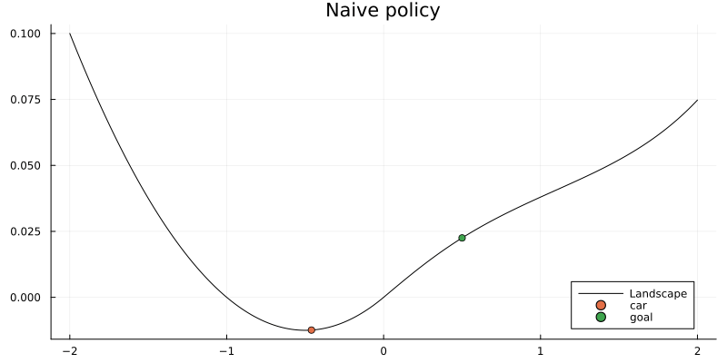
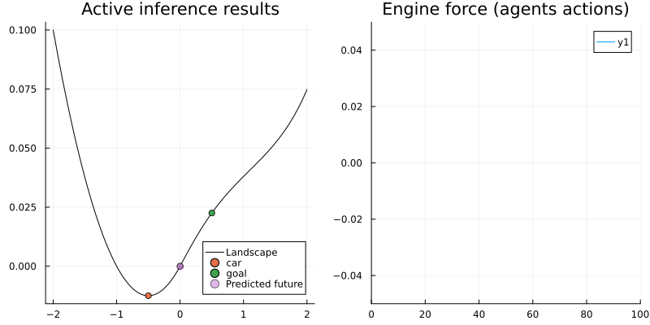

This example was automatically generated from a Jupyter notebook in the RxInferExamples.jl repository.
We welcome and encourage contributions! You can help by:
- Improving this example
- Creating new examples
- Reporting issues or bugs
- Suggesting enhancements
Visit our GitHub repository to get started. Together we can make RxInfer.jl even better! üí™
Active Inference Mountain car
using RxInfer, PlotsA group of friends is going to a camping site that is located on the biggest mountain in the Netherlands. They use an electric car for the trip. When they are almost there, the car's battery is almost empty and is therefore limiting the engine force. Unfortunately, they are in the middle of a valley and don't have enough power to reach the camping site. Night is falling and they still need to reach the top of the mountain. As rescuers, let us develop an Active Inference (AI) agent that can get them up the hill with the limited engine power.
The environmental process of the mountain
Firstly, we specify the environmental process according to Ueltzhoeffer (2017) "Deep active inference". This process shows how the environment evolves after interacting with the agent.
Particularly, let's denote $z_t = (\phi_t, \,\,\dot{\phi_t})$ as the environmental state depending on the position $\phi_t$ and velocity $\dot{\phi_t}$ of the car; $a_t$ as the action of the environment on the car. Then the evolution of the state is described as follows
\[\begin{aligned} \dot{\phi_t} &= \dot{\phi}_{t-1} + F_g(\phi_{t-1}) + F_f(\dot{\phi}_{t-1}) + F_a(a_t)\\ \phi_t &= \phi_{t-1} + \dot{\phi_t} \end{aligned}\]
where $F_g(\phi_{t-1})$ is the gravitational force of the hill landscape that depends on the car's position
\[F_g(\phi) = \begin{cases} -0.05(2\phi + 1) , \, & \mathrm{if} \, \phi < 0 \\ -0.05 \left[(1 + 5\phi^2)^{-\frac{1}{2}} + \phi^2 (1 + 5\phi^2)^{-\frac{3}{2}} + \frac{1}{16}\phi^4 \right], \, & \mathrm{otherwise} \end{cases}\]
\[F_f(\dot{\phi})\]
is the friction on the car defined through the car's velocity $F_f(\dot{\phi}) = -0.1 \, \dot{\phi}\,$ and $F_a(a)$ is the engine force $F_a(a) = 0.04 \,\tanh(a).$ Since the car is on low battery, we use the $\tanh(\cdot)$ function to limit the engine force to the interval [-0.04, 0.04].
In the cell below, the create_physics function defines forces $F_g,\, F_f,\, F_a\,$; and the create_world function defines the environmental process of the mountain.
import HypergeometricFunctions: _₂F₁
function create_physics(; engine_force_limit = 0.04, friction_coefficient = 0.1)
# Engine force as function of action
Fa = (a::Real) -> engine_force_limit * tanh(a)
# Friction force as function of velocity
Ff = (y_dot::Real) -> -friction_coefficient * y_dot
# Gravitational force (horizontal component) as function of position
Fg = (y::Real) -> begin
if y < 0
0.05*(-2*y - 1)
else
0.05*(-(1 + 5*y^2)^(-0.5) - (y^2)*(1 + 5*y^2)^(-3/2) - (y^4)/16)
end
end
# The height of the landscape as a function of the horizontal coordinate
height = (x::Float64) -> begin
if x < 0
h = x^2 + x
else
h = x * _₂F₁(0.5,0.5,1.5, -5*x^2) + x^3 * _₂F₁(1.5, 1.5, 2.5, -5*x^2) / 3 + x^5 / 80
end
return 0.05*h
end
return (Fa, Ff, Fg,height)
end;
function create_world(; Fg, Ff, Fa, initial_position = -0.5, initial_velocity = 0.0)
y_t_min = initial_position
y_dot_t_min = initial_velocity
y_t = y_t_min
y_dot_t = y_dot_t_min
execute = (a_t::Float64) -> begin
# Compute next state
y_dot_t = y_dot_t_min + Fg(y_t_min) + Ff(y_dot_t_min) + Fa(a_t)
y_t = y_t_min + y_dot_t
# Reset state for next step
y_t_min = y_t
y_dot_t_min = y_dot_t
end
observe = () -> begin
return [y_t, y_dot_t]
end
return (execute, observe)
endcreate_world (generic function with 1 method)Let's visualize the mountain landscape and the situation of the car.
engine_force_limit = 0.04
friction_coefficient = 0.1
Fa, Ff, Fg, height = create_physics(
engine_force_limit = engine_force_limit,
friction_coefficient = friction_coefficient
);
initial_position = -0.5
initial_velocity = 0.0
x_target = [0.5, 0.0]
valley_x = range(-2, 2, length=400)
valley_y = [ height(xs) for xs in valley_x ]
plot(valley_x, valley_y, title = "Mountain valley", label = "Landscape", color = "black")
scatter!([ initial_position ], [ height(initial_position) ], label="initial car position")
scatter!([x_target[1]], [height(x_target[1])], label="camping site")
Naive approach
Well, let's see how our friends were struggling with the low-battery car when they tried to get it to the camping site before we come to help. They basically used the brute-force method, i.e. just pushing the gas pedal for full power.
N_naive = 100 # Total simulation time
pi_naive = 100.0 * ones(N_naive) # Naive policy for right full-power only
# Let there be a world
(execute_naive, observe_naive) = create_world(;
Fg = Fg, Ff = Ff, Fa = Fa,
initial_position = initial_position,
initial_velocity = initial_velocity
);
y_naive = Vector{Vector{Float64}}(undef, N_naive)
for t = 1:N_naive
execute_naive(pi_naive[t]) # Execute environmental process
y_naive[t] = observe_naive() # Observe external states
end
animation_naive = @animate for i in 1:N_naive
plot(valley_x, valley_y, title = "Naive policy", label = "Landscape", color = "black", size = (800, 400))
scatter!([y_naive[i][1]], [height(y_naive[i][1])], label="car")
scatter!([x_target[1]], [height(x_target[1])], label="goal")
end
# The animation is saved and displayed as markdown picture for the automatic HTML generation
gif(animation_naive, "ai-mountain-car-naive.gif", fps = 24, show_msg = false);
They failed as expected since the car doesn't have enough power. This helps to understand that the brute-force approach is not the most efficient one in this case and hopefully a bit of swinging is necessary to achieve the goal.
Active inference approach
Now let's help them solve the problem with an active inference approach. Particularly, we create an agent that predicts the future car position as well as the best possible actions in a probabilistic manner.
We start by specifying a probabilistic model for the agent that describes the agent's internal beliefs over the external dynamics of the environment. The generative model is defined as follows
\[\begin{aligned} p_t(x,s,u) \propto p(s_{t-1}) \prod_{k=t}^{t+T} p(x_k \mid s_k) \, p(s_k \mid s_{k-1},u_k) \, p(u_k) \, p'(x_k) \nonumber \end{aligned}\]
where the factors are defined as
\[p'(x_k) = \mathcal{N}(x_k \mid x_{goal},\,V_{goal}) , \quad (\mathrm{target})\]
\[p(s_k \mid s_{k-1},u_k) = \mathcal{N}(s_k \mid \tilde{g}(s_{k-1})+h(u_k),\,\gamma^{-1}) , \quad (\mathrm{state \,\, transition})\]
\[p(x_k \mid s_k) = \mathcal{N}(x_k \mid s_k,\,\theta), \quad (\mathrm{observation})\]
\[p(u_k) = \mathcal{N}(u_k \mid m_u,\,V_u), \quad (\mathrm{control})\]
\[p(s_{t-1}) = \mathcal{N}(s_{t-1} \mid m_{t-1},\,V_{t-1}), \quad (\mathrm{previous \,\, state})\]
where
\[x\]
denotes observations of the agent after interacting with the environment;\[s_t = (s_t,\dot{s_t})\]
is the state of the car embodying its position and velocity;\[u_t\]
denotes the control state of the agent;\[h(\cdot)\]
is the $\tanh(\cdot)$ function modeling engine control;\[\tilde{g}(\cdot)\]
executes a linear approximation of equations (1) and (2):
\[\begin{aligned} \dot{s_t} &= \dot{s}_{t-1} + F_g(s_{t-1}) + F_f(\dot{s}_{t-1})\\ s_t &= s_{t-1} + \dot{s_t} \end{aligned}\]
In the cell below, the @model macro and the meta blocks are used to define the probabilistic model and the approximation methods for the nonlinear state-transition functions, respectively. In addition, the beliefs over the future states (up to T steps ahead) of the agent is included.
@model function mountain_car(m_u, V_u, m_x, V_x, m_s_t_min, V_s_t_min, T, Fg, Fa, Ff, engine_force_limit)
# Transition function modeling transition due to gravity and friction
g = (s_t_min::AbstractVector) -> begin
s_t = similar(s_t_min) # Next state
s_t[2] = s_t_min[2] + Fg(s_t_min[1]) + Ff(s_t_min[2]) # Update velocity
s_t[1] = s_t_min[1] + s_t[2] # Update position
return s_t
end
# Function for modeling engine control
h = (u::AbstractVector) -> [0.0, Fa(u[1])]
# Inverse engine force, from change in state to corresponding engine force
h_inv = (delta_s_dot::AbstractVector) -> [atanh(clamp(delta_s_dot[2], -engine_force_limit+1e-3, engine_force_limit-1e-3)/engine_force_limit)]
# Internal model perameters
Gamma = 1e4*diageye(2) # Transition precision
Theta = 1e-4*diageye(2) # Observation variance
s_t_min ~ MvNormal(mean = m_s_t_min, cov = V_s_t_min)
s_k_min = s_t_min
local s
for k in 1:T
u[k] ~ MvNormal(mean = m_u[k], cov = V_u[k])
u_h_k[k] ~ h(u[k]) where { meta = DeltaMeta(method = Linearization(), inverse = h_inv) }
s_g_k[k] ~ g(s_k_min) where { meta = DeltaMeta(method = Linearization()) }
u_s_sum[k] ~ s_g_k[k] + u_h_k[k]
s[k] ~ MvNormal(mean = u_s_sum[k], precision = Gamma)
x[k] ~ MvNormal(mean = s[k], cov = Theta)
x[k] ~ MvNormal(mean = m_x[k], cov = V_x[k]) # goal
s_k_min = s[k]
end
return (s, )
endAfter specifying the generative model, let's create an Active Inference(AI) agent for the car. Technically, the agent goes through three phases: Act-Execute-Observe, Infer and Slide.
- Act-Execute-Observe: In this phase, the agent performs an action onto the environment at time $t$ and gets $T$ observations in exchange. These observations are basically the prediction of the agent on how the environment evolves over the next $T$ time step.
- Infer: After receiving observations, the agent starts updating its internal probabilistic model by doing inference. Particularly, it finds the posterior distributions over the state $s_t$ and control $u_t$, i.e. $p(s_t\mid x_t)$ and $p(u_t\mid x_t)$.
- Slide: After updating its internal belief, the agent moves to the next time step and uses the inferred action $u_t$ in the previous time step to interact with the environment.
In the cell below, we create the agent through the create_agent function, which includes compute, act, slide and future functions:
- The
actfunction selects the next action based on the inferred policy. On the other hand, thefuturefunction predicts the next $T$ positions based on the current action. These two function implement the Act-Execute-Observe phase. - The
computefunction infers the policy (which is a set of actions for the next $T$ time steps) and the agent's state using the agent internal model. This function implements the Infer phase. We call itcomputeto avoid the clash with theinferfunction ofRxInfer.jl. - The
slidefunction implements the Slide phase, which moves the agent internal model to the next time step.
# We are going to use some private functionality from ReactiveMP,
# in the future we should expose a proper API for this
import RxInfer.ReactiveMP: getrecent, messageout
function create_agent(;T = 20, Fg, Fa, Ff, engine_force_limit, x_target, initial_position, initial_velocity)
huge = 1e6
tiny = 1e-6
Epsilon = fill(huge, 1, 1) # Control prior variance
m_u = Vector{Float64}[ [ 0.0] for k=1:T ] # Set control priors
V_u = Matrix{Float64}[ Epsilon for k=1:T ]
Sigma = 1e-4*diageye(2) # Goal prior variance
m_x = [zeros(2) for k=1:T]
V_x = [huge*diageye(2) for k=1:T]
V_x[end] = Sigma # Set prior to reach goal at t=T
# Set initial brain state prior
m_s_t_min = [initial_position, initial_velocity]
V_s_t_min = tiny * diageye(2)
# Set current inference results
result = nothing
# The `infer` function is the heart of the agent
# It calls the `RxInfer.inference` function to perform Bayesian inference by message passing
compute = (upsilon_t::Float64, y_hat_t::Vector{Float64}) -> begin
m_u[1] = [ upsilon_t ] # Register action with the generative model
V_u[1] = fill(tiny, 1, 1) # Clamp control prior to performed action
m_x[1] = y_hat_t # Register observation with the generative model
V_x[1] = tiny*diageye(2) # Clamp goal prior to observation
data = Dict(:m_u => m_u,
:V_u => V_u,
:m_x => m_x,
:V_x => V_x,
:m_s_t_min => m_s_t_min,
:V_s_t_min => V_s_t_min)
model = mountain_car(T = T, Fg = Fg, Fa = Fa, Ff = Ff, engine_force_limit = engine_force_limit)
result = infer(model = model, data = data)
end
# The `act` function returns the inferred best possible action
act = () -> begin
if result !== nothing
return mode(result.posteriors[:u][2])[1]
else
return 0.0 # Without inference result we return some 'random' action
end
end
# The `future` function returns the inferred future states
future = () -> begin
if result !== nothing
return getindex.(mode.(result.posteriors[:s]), 1)
else
return zeros(T)
end
end
# The `slide` function modifies the `(m_s_t_min, V_s_t_min)` for the next step
# and shifts (or slides) the array of future goals `(m_x, V_x)` and inferred actions `(m_u, V_u)`
slide = () -> begin
model = RxInfer.getmodel(result.model)
(s, ) = RxInfer.getreturnval(model)
varref = RxInfer.getvarref(model, s)
var = RxInfer.getvariable(varref)
slide_msg_idx = 3 # This index is model dependend
(m_s_t_min, V_s_t_min) = mean_cov(getrecent(messageout(var[2], slide_msg_idx)))
m_u = circshift(m_u, -1)
m_u[end] = [0.0]
V_u = circshift(V_u, -1)
V_u[end] = Epsilon
m_x = circshift(m_x, -1)
m_x[end] = x_target
V_x = circshift(V_x, -1)
V_x[end] = Sigma
end
return (compute, act, slide, future)
endcreate_agent (generic function with 1 method)Now it's time to see if we can help our friends arrive at the camping site by midnight?
(execute_ai, observe_ai) = create_world(
Fg = Fg, Ff = Ff, Fa = Fa,
initial_position = initial_position,
initial_velocity = initial_velocity
) # Let there be a world
T_ai = 50
(compute_ai, act_ai, slide_ai, future_ai) = create_agent(; # Let there be an agent
T = T_ai,
Fa = Fa,
Fg = Fg,
Ff = Ff,
engine_force_limit = engine_force_limit,
x_target = x_target,
initial_position = initial_position,
initial_velocity = initial_velocity
)
N_ai = 100
# Step through experimental protocol
agent_a = Vector{Float64}(undef, N_ai) # Actions
agent_f = Vector{Vector{Float64}}(undef, N_ai) # Predicted future
agent_x = Vector{Vector{Float64}}(undef, N_ai) # Observations
for t=1:N_ai
agent_a[t] = act_ai() # Invoke an action from the agent
agent_f[t] = future_ai() # Fetch the predicted future states
execute_ai(agent_a[t]) # The action influences hidden external states
agent_x[t] = observe_ai() # Observe the current environmental outcome (update p)
compute_ai(agent_a[t], agent_x[t]) # Infer beliefs from current model state (update q)
slide_ai() # Prepare for next iteration
end
animation_ai = @animate for i in 1:N_ai
# pls - plot landscape
pls = plot(valley_x, valley_y, title = "Active inference results", label = "Landscape", color = "black")
pls = scatter!(pls, [agent_x[i][1]], [height(agent_x[i][1])], label="car")
pls = scatter!(pls, [x_target[1]], [height(x_target[1])], label="goal")
pls = scatter!(pls, agent_f[i], height.(agent_f[i]), label = "Predicted future", alpha = map(i -> 0.5 / i, 1:T_ai))
# pef - plot engine force
pef = plot(Fa.(agent_a[1:i]), title = "Engine force (agents actions)", xlim = (0, N_ai), ylim = (-0.05, 0.05))
plot(pls, pef, size = (800, 400))
end
# The animation is saved and displayed as markdown picture for the automatic HTML generation
gif(animation_ai, "ai-mountain-car-ai.gif", fps = 24, show_msg = false);
Voila! The car now is able to reach the camping site with a smart strategy.
The left figure shows the agent reached its goal by swinging and the right one shows the corresponding engine force. As we can see, at the beginning the agent tried to reach the goal directly (with full engine force) but after some trials it realized that's not possible. Since the agent looks ahead for 50 time steps, it has enough time to explore other policies, helping it learn to move back to get more momentum to reach the goal.
Now our friends can enjoy their trip at the camping site!.
Reference
We refer reader to the Thijs van de Laar (2019) "Simulating active inference processes by message passing" original paper with more in-depth overview and explanation of the active inference agent implementation by message passing. The original environment/task description is from Ueltzhoeffer (2017) "Deep active inference".
This example was automatically generated from a Jupyter notebook in the RxInferExamples.jl repository.
We welcome and encourage contributions! You can help by:
- Improving this example
- Creating new examples
- Reporting issues or bugs
- Suggesting enhancements
Visit our GitHub repository to get started. Together we can make RxInfer.jl even better! üí™
This example was executed in a clean, isolated environment. Below are the exact package versions used:
For reproducibility:
- Use the same package versions when running locally
- Report any issues with package compatibility
Status `/tmp/jl_A77yVv/Project.toml`
[34004b35] HypergeometricFunctions v0.3.28
[91a5bcdd] Plots v1.41.6
[86711068] RxInfer v4.7.0